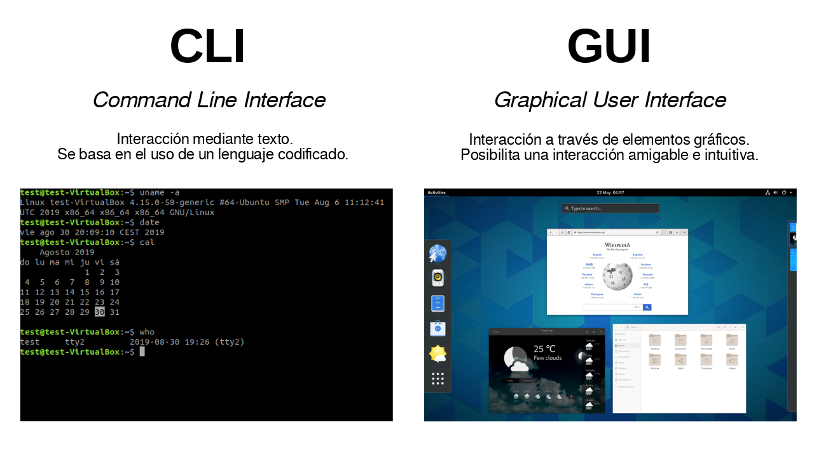

Sistemas Operativos Linux
Bienvenido al curso de Sistemas Operativos Linux. En este curso aprenderás los fundamentos del sistema operativo Linux, desde su instalación y configuración hasta la administración avanzada de usuarios, permisos y automatización de tareas mediante scripts.
Materiales Recomendados
1. Fundamentos del Sistema Operativo Linux
1.1. Historia y Filosofía de Linux
1.1.1. Historia del Sistema Operativo Unix y la Creación de Linux
Linux fue creado en 1991 por Linus Torvalds mientras era estudiante en la Universidad de Helsinki. Su desarrollo comenzó como un proyecto personal para crear un nuevo kernel de sistema operativo libre, inspirado en MINIX, una versión pequeña de UNIX.
El kernel de Linux se distribuyó inicialmente bajo su propia licencia, que tenía restricciones sobre actividades comerciales. Sin embargo, en 1992, el kernel se relicenció bajo la GNU General Public License (GPL), lo que permitió su distribución libre y comercial.
Unix creado en Bell Labs
Ken Thompson y Dennis Ritchie desarrollan UNIX en AT&T Bell Labs.
Proyecto GNU
Richard Stallman inicia el Proyecto GNU para crear un sistema operativo tipo Unix completamente libre.
Linux es creado
Linus Torvalds crea la primera versión del kernel Linux y la comparte en un grupo de noticias.
Primeras distribuciones
Aparecen las primeras distribuciones completas de Linux, incluyendo Slackware y Debian.
1.1.2. Filosofía del Software Libre y de Código Abierto
La filosofía del software libre y de código abierto es central en Linux. Promueve la libertad de usar, estudiar, modificar y distribuir el software. Esto fomenta la colaboración y la innovación, permitiendo a los desarrolladores de todo el mundo contribuir al software y mejorarlo constantemente.
1.1.3. Distribuciones de Linux: Diferencias y Similitudes
Existen numerosas distribuciones de Linux, cada una adaptada a diferentes necesidades. Algunas de las más populares incluyen Ubuntu, Fedora, Debian y CentOS. Aunque todas están basadas en el mismo núcleo (kernel) de Linux, varían en su gestión de paquetes, entorno de escritorio y herramientas preinstaladas.
1.2. Instalación y Configuración Inicial
1.3. Instalación
La instalación de Linux puede variar según la distribución, pero generalmente sigue estos pasos:
- Descargar la imagen ISO de la distribución deseada.
- Crear un medio de instalación (USB, DVD).
- Arrancar desde el medio de instalación.
- Seguir las instrucciones del instalador.
1.4. Medios de Instalación
USB
El método más común y conveniente para instalar Linux.
DVD
Una opción alternativa si no se dispone de un USB.
Red
Instalación a través de la red, útil para instalaciones masivas.
1.5. Instalación Paso a Paso de Diferentes Distribuciones
A continuación, se muestra un ejemplo de instalación de Ubuntu:
- Descargar la imagen ISO de Ubuntu desde su sitio oficial.
- Crear un USB de arranque con la herramienta Rufus.
- Arrancar desde el USB y seleccionar "Instalar Ubuntu".
- Seguir las instrucciones del instalador, seleccionando el idioma, la zona horaria, y creando una cuenta de usuario.
- Esperar a que finalice la instalación y reiniciar el sistema.
1.6.1. Selección de Particiones y Sistemas de Archivos
La selección de particiones y sistemas de archivos es crucial para el rendimiento y la organización del sistema. A continuación, se muestra un diagrama explicativo:

1.7. Configuración Básica del Sistema
Después de la instalación, es importante realizar algunas configuraciones básicas:
- Actualizar el sistema:
sudo apt update && sudo apt upgrade - Instalar controladores adicionales si es necesario.
- Configurar la zona horaria:
sudo dpkg-reconfigure tzdata
1.8. Configuración de la Red
La configuración de la red puede realizarse tanto para conexiones Ethernet como WiFi. A continuación, se muestra un ejemplo de configuración para cada tipo:
Configuración Ethernet
sudo nano /etc/network/interfaces
auto eth0
iface eth0 inet dhcpConfiguración WiFi
sudo nano /etc/wpa_supplicant/wpa_supplicant.conf
network={
ssid="nombre_de_red"
psk="contraseña"
}1.9. Configuración de Usuarios y Permisos
La gestión de usuarios y permisos en Linux es fundamental para la seguridad y organización del sistema. A continuación, se muestra una tabla comparativa de comandos y permisos:
| Comando | Descripción |
|---|---|
useradd |
Crear un nuevo usuario |
usermod |
Modificar un usuario existente |
userdel |
Eliminar un usuario |
chmod |
Cambiar permisos de archivos |
chown |
Cambiar propietario de archivos |
1.10. Gestión de Paquetes y Actualizaciones
En Linux, la gestión de paquetes se realiza mediante gestores de paquetes como APT, DNF, entre otros. A continuación, se muestran algunos ejemplos:
APT (Debian/Ubuntu)
sudo apt update
sudo apt install nombre_paqueteDNF (Fedora)
sudo dnf update
sudo dnf install nombre_paquete1.11. Comandos y Herramientas de la Línea de Comandos
La línea de comandos es una herramienta poderosa en Linux. A continuación, se muestran algunos comandos básicos con ejemplos:
| Comando | Descripción |
|---|---|
ls |
Listar archivos y directorios |
cd |
Cambiar de directorio |
cp |
Copiar archivos |
mv |
Mover o renombrar archivos |
rm |
Eliminar archivos |
1.12. Uso de la Terminal
La terminal es una interfaz de línea de comandos que permite interactuar con el sistema operativo. A continuación, se muestra una demostración visual de la terminal con ejemplos de comandos en ejecución:
1.14. Manipulación de Archivos y Directorios
La manipulación de archivos y directorios en Linux se realiza mediante comandos específicos. A continuación, se muestran algunos ejemplos:
| Comando | Descripción |
|---|---|
cp |
Copiar archivos |
mv |
Mover o renombrar archivos |
rm |
Eliminar archivos |
mkdir |
Crear directorios |
rmdir |
Eliminar directorios vacíos |
1.15. Visualización y Edición de Archivos
La visualización y edición de archivos en Linux se puede realizar mediante varios editores de texto. A continuación, se muestran algunos ejemplos:
| Comando | Descripción |
|---|---|
cat |
Mostrar el contenido de un archivo |
nano |
Editor de texto en la terminal |
vim |
Editor de texto avanzado en la terminal |
gedit |
Editor de texto gráfico |